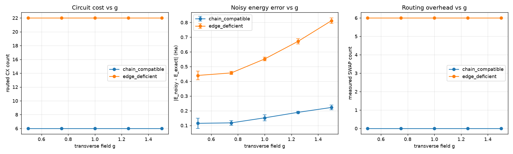

05Figures


We run the same VQE algorithm for the 4-site Transverse-Field Ising Model across two fixed chip topologies and a simulated proposed Processor C. For this workload, connectivity changes the transpiled circuit cost, and the added gate overhead can increase noise sensitivity — measured, not assumed.
A nearest-neighbour coupling Z_i Z_{i+1} needs a CNOT between
connected qubits. When the chip lacks that edge, the compiler inserts SWAPs — each costing
3 extra CNOTs — deepening the circuit and multiplying noise.
Coupling (1,3) is a chord that skips qubit 2. Routing the chain
0-1-2-3 forces an extra SWAP — routed CX 9 vs 6, depth 33 vs 13.
A heavy-hex lattice containing a clean 6-cycle 0-1-2-3-4-5-6. The identical
chain maps with zero SWAPs at native cost.
A simulated, proposed 6-qubit open path: 4 qubits run the VQE, 2 are reserved (unused). Matches B's cost with fewer qubits. No mitigation benefit claimed.
Every number below is generated by src/experiment.py — reproducible,
no hand-typed figures.
| Processor | logical 2Q | routed CX | depth | SWAP | noisy E err (Ha) |
|---|---|---|---|---|---|
| A 5q · chorded | 6 | 9 | 33 | 1 | 0.255 |
| B 9q · heavy-hex | 6 | 6 | 13 | 0 | 0.152 |
| C 6q · simulated | 6 | 6 | 13 | 0 | 0.152 |
To test whether the result holds beyond a single topology, we compared two coupling graphs under identical settings: same Hamiltonian, ansatz, optimized parameters, noise model, shot budget, and seeds. Only the coupling graph changed.
(0,1),(1,2),(2,3),(3,4),(4,5)
6 CX · depth 13 · 0 SWAP
Supports all required NN interactions natively
(0,1),(2,3),(3,4),(4,5),(0,5)
22 CX · depth 48–49 · 6 SWAP
Removes edge (1,2), adds bridge (0,5); graph stays connected but forces longer routing
g ∈ {0.5, 0.75, 1.0, 1.25, 1.5}, its noisy VQE energy error was 0.22–0.26 Ha
higher than the chain-compatible topology's. This is a measured association for this
workload and these two topologies; we report the co-occurrence rather than claiming universal
causation. Full data: results/ablation_results.csv.
Left: routed CX count (chain 6 vs edge-deficient 22). Middle: noisy energy error vs exact (edge-deficient consistently higher). Right: SWAP count (0 vs 6).
Select a topology to inspect its coupling graph and measured circuit metrics.
All values are precomputed by src/experiment.py / src/ablation.py
with seed_transpiler=42 — the demo doesn't re-run the simulator.
| qubits | — |
|---|---|
| edges | — |
| logical 2Q gates | — |
| routed CX | — |
| circuit depth | — |
| measured SWAPs | — |
Exact diagonalization gives ground truth (-4.7588 Ha, independently verified).
Cost is measured by transpiling onto each real coupling map with a fixed
seed_transpiler=42. Noisy energy uses identical noise + 8192 shots over 3
seeds, reported with σ.
Logical 2Q, routed CX, depth and SWAP are each reported separately — never inferred from one another. Ideal accuracy is identical across chips by construction; the signal is the routed cost and the measured noisy-energy gap. The claim is scoped to this 4-site workload only.
All figures regenerate in ~45 seconds:
pip install -r requirements.txt
cd src && python experiment.py
Or run the notebook end-to-end: jupyter nbconvert --to notebook --execute main.ipynb